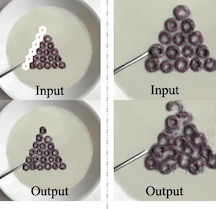

Program-Guided Image Manipulators
Jiayuan Mao*, Xiuming Zhang*, Yikai Li, William T. Freeman, Joshua B. Tenenbaum, Jiajun Wu
ICCV 2019
Paper | Supplemental | Project | BibTeX
Jiayuan Mao*, Xiuming Zhang*, Yikai Li, William T. Freeman, Joshua B. Tenenbaum, Jiajun Wu
ICCV 2019
Paper | Supplemental | Project | BibTeX